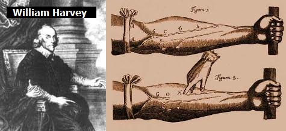
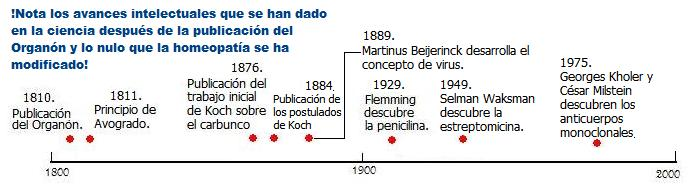
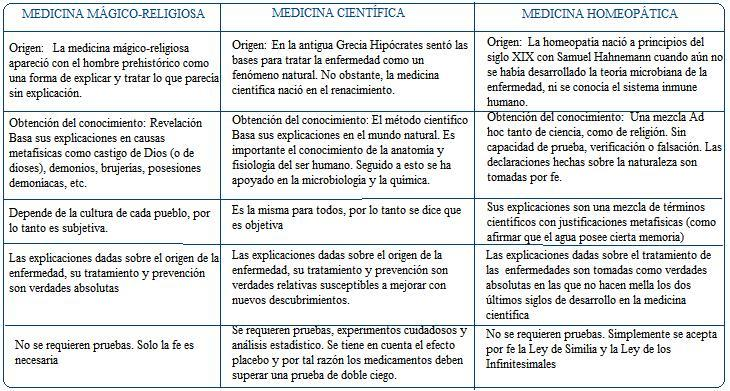

La concepción mágica de la enfermedad
Desde hace mucho tiempo el hombre ha tenido que verse enfrentado con la enfermedad, y como resultado de esto ha desarrollado diversos métodos para curar o por lo menos para aliviar el sufrimiento.
En los pueblos primitivos la enfermedad se consideraba como castigo de alguna divinidad o se creía resultado de romper un tabú o alguna regla sagrada para la tribu. Así pues tenemos que en los pueblos del antiguo Egipto, Mesopotamia, entre otros, la concepción de la enfermedad es mágica y por lo tanto el diagnóstico y el tratamiento también requieren medios y ritos mágicos.
Por ejemplo, en la Asiria antigua la medicina era esencialmente mágico-religiosa, allí los encargados de la medicina eran los Asu quienes tenían una predilección por considerar que la posesión por espíritus era la causa de las enfermedades. La florida imaginación de los asirios les había llevado a crear espíritus malignos muy especializados; si había dolor en el cuello, el responsable era el espíritu maligno Adad; el dolor en el pecho era responsabilidad de Ishtar; el espíritu Rabisu producía problemas cutáneos mientras que Labartu afectaba el aparato genital femenino, y así sucesivamente.
En la actualidad este tipo de mentalidad primitiva aún persiste, pues es frecuente escuchar hablar de enfermedades causadas por “mal de ojo”, “castigo divino” e incluso “posesiones demoníacas”. En muchos países latinoamericanos hay personas que consultan a brujos indígenas buscando la cura de sus enfermedades. Aquí es importante notar que la forma como la medicina mágico-religiosa obtiene conocimiento es por medio de la “revelación”, la cual es una verdad sagrada que obtiene el chamán o líder religioso del grupo. Debe resaltarse que estas revelaciones cambian de pueblo en pueblo, por ejemplo los mismos demonios que asignaban como causa de una enfermedad en la antigua Asiria no eran la misma causa en la India.
La enfermedad dejo de considerarse como un fenómeno sobrenatural con Hipócrates de Cos (460-332 a.C.) médico griego que vivió a finales del siglo V A.C. Hipócrates afirma que la enfermedad se puede comprender ya que sus causas se encuentran en el ámbito de la naturaleza. En su obra sobre la enfermedad sagrada, en la cual hacía referencia a la epilepsia afirmó:
“Voy a discutir la enfermedad llamada “sagrada”. En mi opinión, no es más divina o más sagrada que otras enfermedades, sino que tiene una causa natural, y su supuesto origen divino se debe a la inexperiencia de los hombres, y a su asombro ante su carácter peculiar. Mientras siguen creyendo en su origen divino porque son incapaces de entenderla, realmente rechazan su divinidad al emplear el método sencillo para su curación que adoptan, que consiste en purificaciones y encantamientos. Pero si va a considerarse divina nada más porque es asombrosa, entonces no habrá una enfermedad sagrada sino muchas, porque demostraré que otras enfermedades no son menos asombrosas y portentosas, y sin embargo nadie las considera sagradas.”

El salto conceptual dado por Hipócrates no ocurrió sin un antecedente. Desde casi un siglo antes de él unos filósofos denominados presocráticos habían empezado a preguntarse por la naturaleza del mundo y se habían atrevido a plantear respuestas en las que no se incluían las divinidades. Por ejemplo, Tales de Mileto consideraba que el mundo estaba formado por el elemento agua. La explicación de Tales es similar a la del mito babilónico en la que el dios Marduk creó el mundo del agua, solo que en la narración del filósofo presocrático el dios ya no es necesario.
El concepto de la enfermedad como un fenómeno natural es en últimas un legado de los filósofos presocráticos que se atrevieron a formular un mundo entendible en términos naturales, libre del dominio de dioses y demonios. El efecto de tal revolución hoy es visible en los quirófanos, en los laboratorios clínicos y en los consultorios médicos. Sin embargo, como lo mencione anteriormente, desafortunadamente aún quedan rastros de la medicina mágico-religiosa.
Los inicios de la medicina científica.
La medicina científica se gesta en el renacimiento. Esta época, que abarca desde el año 1543 a 1661 (aunque la ubicación de los límites del renacimiento varia según los autores) se caracterizó, entre otras cosas, por el rechazo de la autoridad de la Iglesia Católica en cuestiones de explicaciones sobre la naturaleza, y aún de fe (recordemos a Martín Lutero y la reforma protestante que inició). El hombre renacentista se muestra más interesado en este mundo que en el cielo predicado por la Iglesia, además de empezar a entender el mundo natural en términos materialistas siguiendo un método propio, esto último conllevó al nacimiento de la ciencia moderna.
Precisamente una de las características de la ciencia moderna es el escrutinio escéptico, el no aceptar nada como cierto solamente por que lo dice alguien importante. De hecho el nacimiento de la ciencia moderna, con Galileo Galilei, estuvo rodeado por la tensión entre la Iglesia Católica y las observaciones cuidadosas del físico que no encajaban con la autoridad establecida: la Biblia y el famoso filósofo Aristóteles.
En medicina, al igual que en la física, se cuestionó la autoridad establecida y se dio paso a la búsqueda de evidencias para aceptar una idea y tener una concepción más acertada de la naturaleza. Fue el anatomista belga Andrés Vesalio (1514-1565) quien en su obra De humani corpori fabrica, da más importancia a la observación de la realidad que a lo dicho por las autoridades tradicionales sobre ella. Una característica del trabajo de Vesalio es que expone y corrige los errores del médico que durante la edad media se consideró la autoridad incuestionable en medicina, es decir Galeno (129-199 d.C.).
La medicina científica le debe mucho a la revolución anatómica del renacimiento en la que Vesalio fue el más destacado. De igual forma el renacimiento fue testigo de la revolución quirúrgica la cual fue abanderada por Ambrosio Paré (1507-1591) quien transformó algunos de los métodos de cirugía, los cuales habían permanecido sin variación desde la época de los romanos, gracias a la observación.
Paré se desempeñó como cirujano del ejercito francés. Estando atendiendo los heridos por arcabuz en la batalla hizo el primero de sus descubrimientos. Trató una herida por pólvora con una mezcla de yema de huevo, agua de rosas y aguarrás. Paré creyó que sus pacientes morirían envenenados ya que se esos días se pensaba que la pólvora era venenosa, pero al día siguiente se dio cuenta que el tratamiento utilizado por él era mejor. En otra guerra decidió ligar los vasos sanguíneos del muñón que quedaba tras una amputación en lugar de cauterizar (detener la hemorragia al quemar los tejidos), lo cual habitualmente se hacía con un hierro caliente.
Otra revolución, aparte de la anatómica y la quirúrgica, fue la fisiológica, cuya figura más destacada fue William Harvey (1578-1657) quien dedujo la circulación sanguínea a través de sus observaciones.
Fiel a la nueva práctica de no aceptar como válido algo simplemente porque lo dijo alguien muy importante, Harvey invalida la explicación hasta el momento imperante, la defendida por Galeno, la cual establecía que la sangre iba y volvía del corazón por las venas, y que las arterias no contenían sangre sino aire, pneuma, y que la sangre pasaba directamente del ventrículo derecho al izquierdo. Lo que hace importante y trascendental el trabajo de Harvey, más que el hecho del descubrimiento de la circulación doble, es la forma como abordó el problema: recurriendo a la observación de la naturaleza, en lugar de consultar los libros escritos por autoridades supuestamente incuestionables.
Una cuarta revolución fue la microscópica la cual se inició con las observaciones de Anton van Leeuwenhoek (1632-1723) quien observó por vez primera bajo el microscopio los espermatozoides, eritrocitos, las láminas del cristalino, las miofribrillas y las fibras musculares estriadas además de diferentes tipos de bacterias. Otro importante microscopista fue Marcello Malpighio (1628-1694). En 1661 publicó su primer libro Observaciones anatómicas en los pulmones, en el que describe los alvéolos pulmonares y los capilares sanguíneos donde se comunican las arterias con las venas pulmonares en el pulmón de la rana. En posteriores trabajos describió la estructura de la piel, de los ganglios linfáticos y del bazo, la existencia de los glomérulos en el riñón, también describió el desarrollo embrionario de varias especies animales.
La revolución microscópica abrió a los ojos de la ciencia un nuevo mundo fascinante cuyo estudio hizo posible la identificación de muchos virus, bacterias, protozoos y hongos patógenos.
Una quinta revolución ayudaría a dar forma a la medicina científica, esta fue la revolución en patología, la cual fue llevada a cabo por Antonio Benivieni (1443-1502). (Benivieni fue un excelente humanista. Fue también el médico de Savonarola, el monje que fue quemado vivo por afirmar que el Vaticano era una abominación dada la corrupción del Papa Alejandro VI) Este médico italiano se vio favorecido por el levantamiento de las restricciones impuestas por la Iglesia durante la Edad Media sobre las autopsias, por tal razón empezó a examinar los cuerpos de sus pacientes fallecidos. Benivieni realizó registros clínicos de la enfermedad. En uno de sus casos registrados se puede leer:
“Mi tocayo, Antonio Bruno, retenía el alimento que había ingerido por un corto tiempo y después lo vomitaba sin haberlo digerido. Fue tratado cuidadosamente con toda clase de remedios para curar los problemas gástricos pero como ninguno le sirvió para nada, adelgazó por falta de nutrición hasta quedarse en pura piel y huesos; finalmente le llegó la muerte.
El cadáver se abrió por razones de interés público. Se encontró que la apertura de su estómago se había cerrado y que se había endurecido hasta la parte más inferior resultando en que nada podía pasar por ahí a los órganos siguientes, lo que hizo inevitable la muerte.”
En la actualidad tal descripción se asociaría con un cáncer de estómago de la variedad linitis plástica.
La importancia del trabajo de Benivieni es que, continuando con el legado de Vesalio y Harvey, afirma que para conocer las causas de las enfermedades se debe interrogar a la naturaleza, de allí las autopsias y las descripciones meticulosas que buscan correlaciones anatomoclínicas.
La última revolución conceptual llevada a cabo en el renacimiento en el campo de la medicina fue la clínica. Como personaje destacado cabe mencionar al inglés Thomas Syndenham (1624-1689) quien retomó las ideas de Hipócrates respecto a la importancia de tomar atenta nota de los síntomas de la enfermedad e interpretarlos como esfuerzos hechos por el organismo por librarse de la enfermedad. Syndenham tuvo la oportunidad de hacerse una idea clara de los síntomas de muchas enfermedades que por aquella época eran epidemias de forma tal que él es el primero en distinguir el sarampión de la escarlatina. A pesar de este aporte tan importante Syndenham también tenía ideas que hoy consideramos nada científicas como la influencia de los astros en la generación de enfermedades entre otras.

Revolución |
Personaje destacado |
|---|---|
Anatómica |
Andrés Vesalio (1514-1565) |
Quirúrgica |
Ambrosio Paré (1507-1591) |
Fisiológica |
William Harvey (1578-1657) |
Microscópica |
Anton van Leeuwenhoek (1632-1723) y Marcello Malpighio (1628-1694) |
En patología |
Antonio Benivieni (1443-1502) |
Clínica |
Thomas Sydenham (1624-1689) |
En el siglo XIX se aumentó el conocimiento de la fisiología humana y se habló por primera vez de homeostasis (proceso por el cual un organismo mantiene las condiciones internas constantes necesarias para la vida), concepto acuñado por el fisiólogo francés Claude Bernard (1813- 1878).
La visión sobre la enfermedad cambia sorprendentemente con los trabajos de Louis Pasteur (1822- 1895) y Robert Koch (1843 -1910). Pasteur propone que el origen de las enfermedades está en los microorganismos. Su colega alemán, Koch, logró demostrar tal teoría aislando en la década de 1870 la bacteria causante del carbunco, Bacillus anthracis, y luego la causante de la tuberculosis, Mycobacterium tuberculosis, en 1882.
El trabajo de Koch, aparte de haber sido de importancia capital para el desarrollo de la medicina, es un buen ejemplo de la forma de cómo la medicina científica obtiene conocimiento. Koch observó que la bacteria causante del carbunco se encontraba en la sangre de todos los animales enfermos (Koch usó ratones como animales de investigación), esto podría llevarlo a afirmar que la bacteria era la causante de la enfermedad. Sin embargo, Koch quería demostrarlo más allá de toda duda razonable. Por tal razón tomó muestras de sangre de un ratón infectado y la inyectó a otro sano, enfermando así al ratón sano. Este procedimiento lo hizo en cadena con 21 animales y en cada uno de ellos Koch observaba la presencia de la bacteria en la sangre del ratón infectado.
Koch llevó su hipótesis a una prueba más. Demostró que la bacteria podía ser cultivada en un medio externo al animal, y notó que si inyectaba un ratón sano con una muestra de bacterias del cultivo estos también enfermarían de carbunco. Gracias a los trabajos de Koch se dio un gran estímulo para el desarrollo de la microbiología. El trabajo del médico alemán dio origen a cuatro postulados para demostrar que un microorganismo en particular causa una enfermedad en particular:
El organismo debe estar presente siempre en los animales enfermos y ausente de los individuos sanos.
El organismo patógeno debe ser cultivado en cultivo puro fuera del animal enfermo.
Dicho cultivo, cuando se inocula a un animal sano debe iniciar en este los síntomas propios de la enfermedad.
El supuesto patógeno debe reaislarse de estos animales experimentales y cultivado de nuevo en el laboratorio. Al examinarse el organismo patógeno debe mostrar las mismas propiedades que el organismo original.
Estos postulados son en verdad científicos ya que fueron fruto de un trabajo minucioso en el que hubo una buena dosis de escepticismo. Koch no salió gritando Eureka! al observar por primera vez las bacterias en la sangre de los ratones, él elaboró un conjunto de pruebas sólidas en las que se colocaba a prueba la hipótesis. Este trabajo es una buena ejemplificación de la forma como la medicina científica obtiene el conocimiento.
Para terminar esta mirada histórica de la medicina científica falta mirar el resto del siglo XIX y el XX. Estos siglos dieron origen a las vacunas, el desarrollo de los antibióticos, los trabajos en inmunología, la anestesia, la endoscopia y los rayos X, la endocrinología, el descubrimiento de las vitaminas, la epidemiología, el desarrollo de las pruebas de laboratorio, el estudio de la biología molecular y el espectacular despliegue de la genética. El desarrollo científico de estos dos últimos siglos aventaja a todos los logros de los siglos anteriores juntos; sin embargo, estos no podrían haber sido posibles sin la visión humanista del Renacimiento, ni menos aún sin el naturalismo iniciado con los filósofos presocráticos.

Medicina homeopática (orígenes y crítica)
En nuestros tiempos es común oír hablar de “medicinas alternativas” o “medicinas complementarias”, de estas la más común es la homeopatía. Esta práctica nació en 1810, cuando el médico alemán, Samuel Hahnemann (1755-1843) publicó la obra “Organon der Rationellen Heilkunde”. En este voluminoso libro Hanneman presentó una explicación sobre el origen de las enfermedades y sobre la manera de curarlas, utilizando mecanismos similares a los que causan los males, de ahí el nombre “homeopatía” (curar con lo similar).
En los días de Hahneman la medicina no se encontraba tan desarrollada como en nuestros días. Para que el lector se haga a una idea, la sífilis, una enfermedad venérea, se trataba con la administración de vapores de mercurio, los cuales son muy venenosos, y que de hecho provocaban la muerte en la mayoría de los enfermos. Hoy en día la sífilis se trata con antibióticos, pero estos no estaban disponibles en la época de Hahneman. (La penicilina fue descubierta por Alexander Fleming en 1929).
Las bases de la homeopatía son dos: “La ley de Similia y la Ley de los Infinitesimales.” Para poder comparar la medicina científica con la medicina homeopática es necesario examinar estos dos principios, ya que en ellos se basan todos los homeópatas.
La Ley de Similia afirma que una sustancia curará una enfermedad si suministrada a una persona sana provoca los mismos síntomas o síntomas muy parecidos a los que produce dicha enfermedad. De esta base, deriva el nombre de la homeopatía: homois “similar” y pathos “sufrimiento”, en griego.
No obstante, la Ley de Similia, uno de los principios básicos de la homeopatía suena curioso, por decirlo menos. Pongamos un ejemplo, si Usted tiene una diarrea, ésta puede curarse suministrándole una sustancia que en una persona sana produzca diarrea. ¿Se curará de su diarrea si le suministra hipoclorito de sodio? Yo lo dudo. Pero Hahnemann así lo creía. Aquí es importante ubicarnos nuevamente en el medio intelectual de los tiempos de Hahnemann. En los tiempos del fundador de la homeopatía no se había desarrollado la Teoría infecciosa de la enfermedad elaborada gracias a los trabajos de Pasteur y Koch. Esto deja ver las ingenuas explicaciones de Hahnemann.
La elección de los medicamentos homeopáticos también es curiosa. Hahnemann afirmaba que para elegir el medicamento apropiado se debía administrar a una persona sana cantidades cada vez mayores de esa sustancia hasta que aparecieran los primeros síntomas de intoxicación, los síntomas debían compararse con las enfermedades registradas y si eran similares a los síntomas de alguna enfermedad, esa sustancia pasaba a considerarse como un medicamento útil para el tratamiento de tal enfermedad.
Volvamos al ejemplo de la diarrea. Supongamos que ya comprobamos en un ratón de laboratorio que el hipoclorito de sodio produce diarrea. En ese momento afirmamos basados en la “Ley de los Similia” que el hipoclorito de sodio es un buen remedio para la diarrea.
La segunda base de la homeopatía es la “Ley de los Infinitesimales”, este principio dice que cuanto más pequeña sea la dosis más poderoso será el efecto de la sustancia. Hahnemann afirmaba que los efectos de la sustancia se potencian con la dilución de la misma; cuanto más diluida esté la sustancia más poderoso será su efecto.
Retomando el ejemplo con el que estamos trabajando, debemos diluir el hipoclorito de sodio en agua, para potenciar sus propiedades curativas (Siguiendo la Ley de los Infinitesimales).
Las diluciones que usan los homeópatas son decimales, por lo tanto para seguir con nuestro ejemplo, tomaremos una décima parte del hipoclorito de sodio y lo disolveremos en nueve decimos de agua destilada. Agitamos, mezclamos, repetimos la operación. Tomamos de la solución una décima parte, y la disolvemos en otro recipiente en nueve décimos de agua destilada. Según Hahnemann, estamos haciendo un medicamento más eficaz. La Homeopatía suele hacer diluciones de 1/1000000 o 1/10000000, y en algunos casos se llega a grados de dilución tan extremos que la probabilidad de encontrar alguna molécula de la supuesta sustancia activa en el medicamento final es inferior al 50%.
La ley de los infinitesimales es demasiado ingenua. Esto se debe al ambiente intelectual de Hahnemann. Iniciando el siglo XIX se promulgó la primera teoría atómica moderna gracias al químico británico Jhon Dalton (1766-1844). La teoría atómica de Dalton afirmaba que toda la materia estaba formada por átomos de diferente masa que se unen en proporciones sencillas para formas compuestos. Imaginemos ahora que tiene usted un recipiente con metanol en estado líquido (CH3OH) ¿Podrá dividir esta materia de forma infinita?. Claro que no. En algún momento usted llegará a la molécula de metanol y si la dividiese se perderían las propiedades físicas y químicas de este alcohol. Así pues tenemos que afirmar que la materia NO se puede dividir en unidades más pequeñas infinitamente, sin que pierda sus características y esto contradice la ley de los infinitesimales.
Un año después de la publicación del Organon, el italiano Amadeo Avogadro (1776-1856) afirmó que volúmenes iguales de gases bajo idénticas condiciones de presión y temperatura contienen igual número de moléculas. El número no pudo calcularse sino hasta finales del siglo XIX, y se estableció que era 6,02 × 1023, es decir seiscientos mil trillones. Si tenemos 6,02 × 1023 moléculas del hipoclorito de sodio, podemos decir que tenemos una mol de dicha sustancia. El concepto de mol no solo se aplica a moléculas de gases, como lo hizo Avogadro, sino que ahora incluye átomos e iones independiente se su estado, sin embargo, las consideraciones sobre el volumen no son aplicables a líquidos y sólidos.
Pero, ¿Qué tiene esto que ver el concepto de mol con la homeopatía? Recordemos que los homeópatas inician la elaboración de sus medicamentos realizando soluciones muy diluidas. En un primer paso los homeópatas diluyen una sustancia en un solvente que tiene 100 veces el peso de esta. Es decir, podemos tomar un cm3 de hipoclorito de sodio y diluirlo en agua destilada hasta alcanzar 100 cm3 de solución. Tal solución la denominan lC (un centesimal hahnemanniano), sin embargo, el medicamento homeopático aún no se ha terminado de elaborar. Aún falta diluirlo más. Luego se toma 1 cm3 de la solución y se le agrega agua destilada hasta alcanzar nuevamente los 100 cm3. Este sería el segundo centesimal (2C). Sin embargo, los medicamentos homeopáticos se obtienen hasta alcanzar 12C e incluso más. ¿qué obtenemos al final? El medicamento será solo agua (o alcohol o lactosa que también se usan para realizar las soluciones), pues allí habrá una parte del producto inicial en un cuatrillón y recordemos que una mol son seiscientos mil trillones. Si partiéramos de una mol de hipoclorito de sodio (6,022 x 1023) al terminar la solución no tendríamos en el producto final una sola parte del producto inicial.
La homeopatía no incorporó los adelantos de la medicina de los siglos XIX y XX. Para Hahneman síntomas y enfermedad son la misma cosa. Hoy los médicos miran ésta última afirmación como un desatino, pues diferentes enfermedades pueden causar diarrea, pero según su origen el tratamiento será diferente. Tome el caso del cólera y la amebiasis. La primera se produce gracias a la bacteria Vibrio cholerae y la segunda por el protozoo Entamoeba histolytica. Aunque ambas enfermedades producen diarrea estas deben tratarse teniendo en cuenta el organismo patógeno que las generó. El bacilo que produce el cólera se puede combatir utilizando antibióticos como el cloranfenicol, la ampicilina y la tetraciclina, entre otros; las amebas patógenas se pueden combatir con secnidazol. En la medicina científica se formula un medicamento teniendo en cuenta las causas, no solo los síntomas, por esta forma de abordar los problemas de salud se puede decir que la homeopatía no ha llegado a la modernidad. ¿O preferiría que se tratará a un paciente de cólera con gotas que son casi agua destilada en su totalidad y no atacar el microorganismo que las generó?
La homeopatía tampoco incorporó la teoría atómica a su sistema explicativo, ni siquiera revisó sus postulados a la luz del concepto de mol, tan importante en la química. Este deambular por el mundo sin tener en cuenta los nuevos descubrimientos de las ciencias es una característica de las seudociencias.
La posibilidad que un medicamento haga efecto sin que una de sus moléculas este presente fue puesta a prueba por la BBC en el serie de divulgación científica “Horizon” el pasado 26 de noviembre de 2002. Los medicamentos homeopáticos se probaron en varios cultivos de células. Los resultados fueron nulos.
Algunas personas afirman haber presentado mejoría después de haber consumido medicamentos homeopáticos, ¿cómo explicar esto? La verdad es que muchas de las enfermedades cesan por la acción de nuestro sistema inmune, y cuando esto ocurre y el paciente relaciona su mejoría con el consumo de agua destilada (medicamento homeopático). El efecto placebo es otro aspecto importante que se debe tener en cuenta. Este efecto consiste en la curación de la enfermedad por el solo hecho de tratarla sin importar cual sea el tratamiento, es simplemente un efecto psicológico que ayuda al paciente.
Para medir la efectividad de un medicamento sin afectar los resultados por el efecto placebo se hacen pruebas en las que se toman dos grupos, uno es el experimental y otro es el grupo control. El grupo experimental toma el medicamento a probar y el grupo control toma azúcar, lactosa o cualquier sustancia que sirva como placebo. Sin embargo, en este tipo de prueba ni los pacientes, ni quienes dan los medicamentos saben cuales son los grupos experimental, control, ni cual es el medicamento ni cual es el placebo. Este tipo de prueba se denomina “prueba de doble ciego”. Cabe resaltar que la homeopatía no ha superado una prueba de doble ciego.
Los homeópatas no han publicado hasta el momento un artículo científico serio en una revista con comité de revisión. Lo más cercano a esto ocurrió en 1988 cuando el Dr. Benveniste publicó un artículo en “Nature” en el que afirmaba que había logrado obtener una reacción en glóbulos blancos humanos al entrar en contacto con una solución muy diluida de un anticuerpo (los anticuerpos son proteínas producidas por los linfocitos B a fin de unirse a partículas extrañas, los antigenos, y favorecer así su destrucción). El Dr. Benveniste afirmó que su solución era de 10120. El famoso homeópata afirmaba que el agua contenía cierta “memoria” la cual hacía actuar a los glóbulos blancos. No obstante, al revisar de nuevo el procedimiento de Benveniste se logró establecer que las conclusiones a las que llegó no pueden tomarse como ciertas ya que los experimentos realizados contuvieron errores estadísticos importantes. En otras palabras, sus resultados no pudieron ser reproducidos independientemente.
Estableciendo diferencias
Muchas personas aún no distinguen entre la ciencia convencional y las seudomedicinas, de la cual la más corriente es la homeopatía. El siguiente cuadro establece las diferencias entre ellas y también con la medicina mágico religiosa.
Conclusión:
Una enorme distancia se ha recorrido desde las cavernas en las que rezaba un chamán hasta las salas de cirugía de hoy en día. Pero tan grande y espectacular como es esta distancia entre la modernidad y el pasado, también lo es entre la medicina científica y la homeopática. Solo con la comprensión de la ciencia, en cuanto a su método y sus descubrimientos se podrá evitar que se engañen a las personas a costa de su salud y su vida misma.
Volver a la sección Escepticismo
Comentarios
Comments powered by Disqus